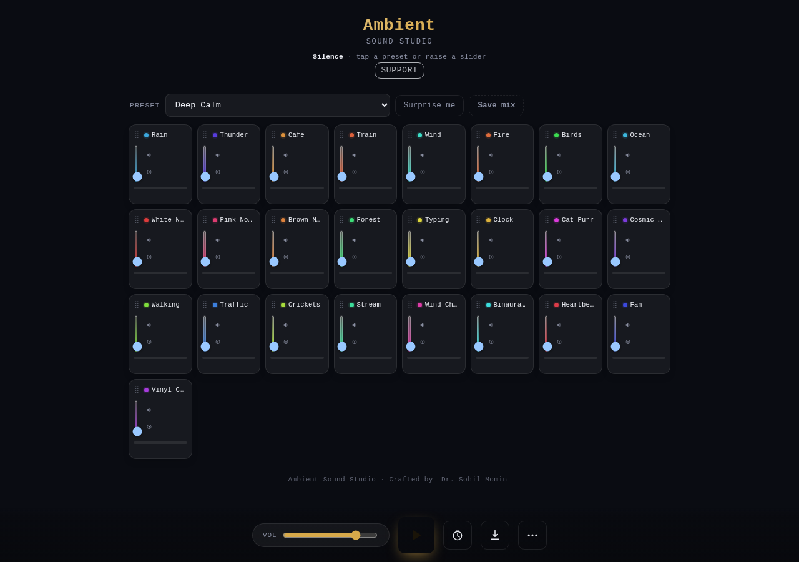

Build a room out of sound.
Layer rain, thunder, fire, café murmur and ocean into your own soundscape — then export the mix as WAV or Opus. It runs entirely in your browser, works offline, and never sends a thing.
What's inside
25 synthesised layers
Rain, thunder, café, train, wind, fire, birds, ocean, noise colours, forest, typing, clock, cat purr, cosmic drone, crickets, stream, chimes, binaural beat, heartbeat, fan, vinyl crackle — every one generated in the browser.
36 curated presets
Sleep, Focus, Relax, Nature and Urban moods — from Monsoon Evening to Deep Focus. Each carries a matching theme, and "Surprise me" picks a random mix.
WAV & Opus export
Render up to 10 minutes as lossless WAV (16- or 24-bit) or compact Opus. Peak-normalised and built from crossfaded tiles, so nothing loops audibly.
Offline and installable
One 137 KB file with no audio files and no network calls. Open it with the network off and it still works; add it to your home screen and it opens like an app.
Private by design
No analytics, no telemetry, no accounts, no cloud. Mixes, custom sounds and settings stay on your device. The only optional request is the Opus encoder you choose to download.
Three languages
The whole interface — layer names, presets, messages — ships in English, हिन्दी and ગુજરાતી, switchable any time from the More menu.
From silence to soundscape
- Pick a preset. Tap a curated mood, or hit "Surprise me" for a random mix — the whole app recolours to match.
- Build your mix. Raise individual layer faders, use mute and solo, watch the live level meters, drag to reorder.
- Play and unwind. Add reverb, binaural beats or a breathing guide; set a sleep timer or a Pomodoro.
- Export it. Render to WAV or Opus, or copy a share link so anyone can open your exact soundscape.
The first click starts audio — browsers require a gesture before sound can play.
See it live

It's the whole app, hosted
Nothing to install. On a phone you can add it to your home screen and it opens like a native app. 25 layers, 36 presets, reverb, ducking and binaural beats.
Get started
Use it online, or run it from your disk — the whole app is one HTML file. No build, no server, no network.
# clone the repository git clone https://github.com/drsamonline/ambient-sound-studio.git cd ambient-sound-studio # open index.html — that is the entire application
Support the work


Free to use, and it stays free
One person's work: no company, no ads, no tracking, no paid tier. If it helped you sleep or concentrate, a contribution keeps the next one coming — any amount, or none.